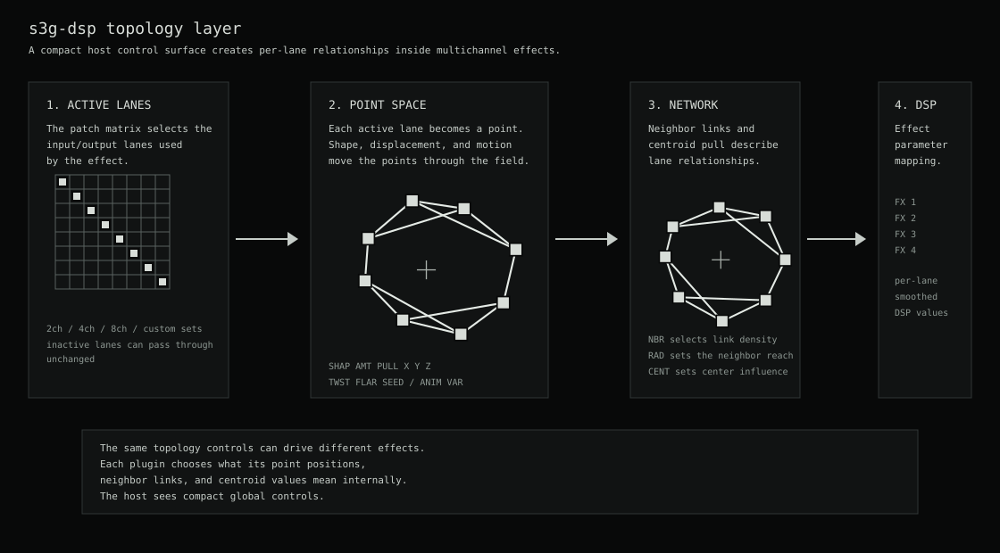
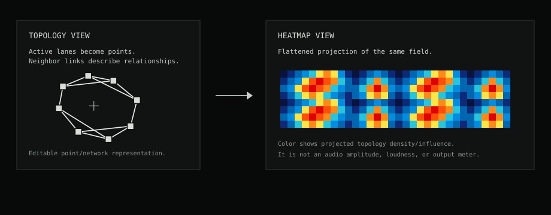
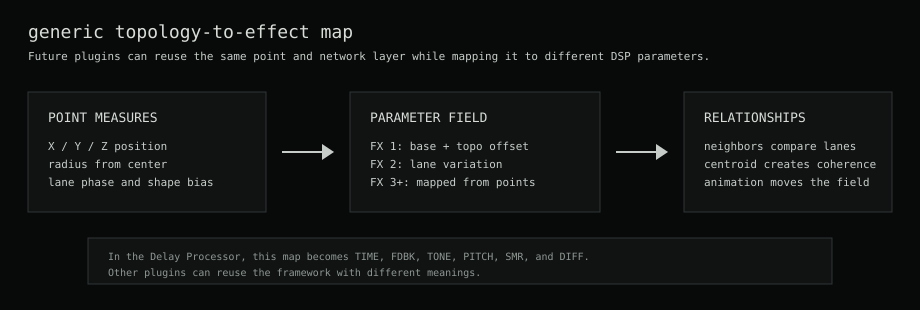

Topology Framework
Topology is the shared control layer for s3g-dsp plugins. The patch matrix selects active input lanes. Those lanes become points. The points form a network. Each plugin maps that network to sound.
This keeps automation compact. REAPER sees global controls while per-lane variation stays inside the plugin.
Roadmap Diagram
The diagram shows the generic model. A delay, filter, spatial mixer, or future processor can reuse the same topology layer and map it to different parameters.

Control Model
- The host pin connector feeds the fixed-width plugin inputs.
- The patch matrix controls which plugin input lanes are active.
- Shape and displacement controls position active lanes as points.
- Animation and variants move the point field over time.
- Neighbor and centroid controls define relationships between lanes.
- Each plugin maps the topology field to its own sound parameters.
Heatmap Visualization
The heatmap is another view of the topology field. It shows point position, displacement, and motion. It is not a level meter.

Plugin Mapping
Topology controls stay consistent across plugins. Each plugin decides what the field means. The Delay Processor maps it to time, feedback, tone, pitch, smear, and diffusion.
